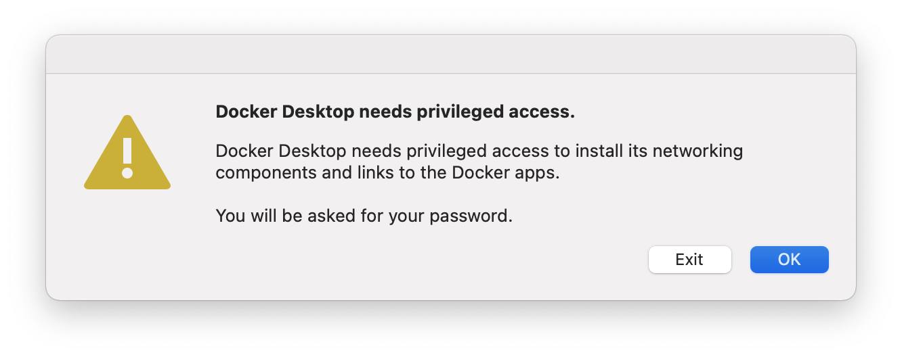
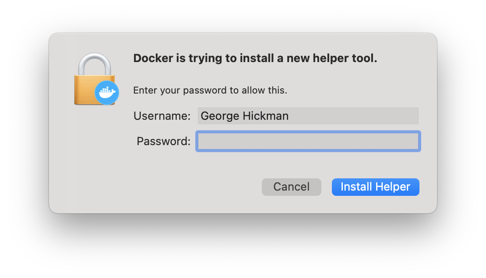
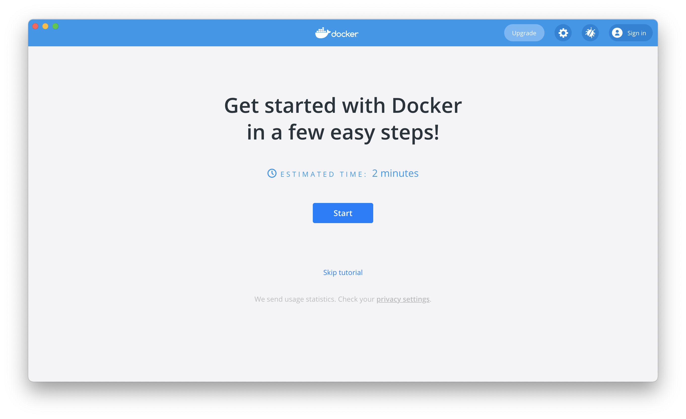

macOS Install Guide🔗
This guide was created using macOS 11.1
It is expected that this guide should work from 10.14 upwards but has only been tested with 11.1
Open Terminal.app by clicking the magnifying glass icon in the top right of your screen.
Type terminal and hit enter.
Install Homebrew, this should install the Xcode Command Line Tools for you as well.
This command might take a while to run depending on the speed of your internet connection.
/bin/bash -c "$(curl -fsSL https://raw.githubusercontent.com/Homebrew/install/HEAD/install.sh)"
Once homebrew is installed use it to install pipx and pyenv:
brew install pipx pyenv
Next, install Docker for Mac, GitHub Desktop, and Visual Studio Code:
brew install --cask docker github visual-studio-code
Use pyenv to install Python:
This command might take a while to run depending on the speed of your computer.
pyenv install 3.9.1
Then install the OpenSAFELY CLI with pipx, using the Python installed in the previous step:
pipx install opensafely --python ~/.pyenv/shims/python3.9
Test the installation of OpenSAFELY CLI. This should print out the usage and available sub commands:
% opensafely --help
usage: opensafely [-h] [--version] COMMAND ...
optional arguments:
-h, --help show this help message and exit
--version show program's version number and exit
available commands:
COMMAND
help Show this help message and exit
run Run project.yaml actions locally
codelists
Commands for interacting with https://codelists.opensafely.org/
Set up Docker by opening the app you installed earlier:
open /Applications/Docker.app
You'll be warned about the system dialogue which is about to pop up, choose "OK".

Enter your password and click "Install Helper".

Now that the Docker application is open you can click "Skip tutorial" and close the window. The Docker service will continue to run in the background and can be accessed from the Docker icon in your menu bar.

You're done!
Now you can navigate to a research repo, on your local machine, and use opensafely via the command line.